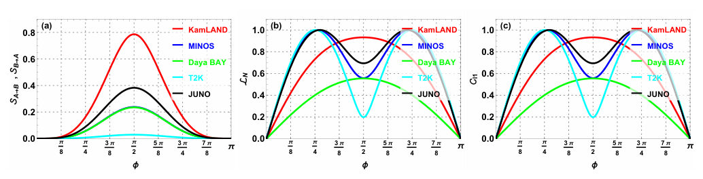
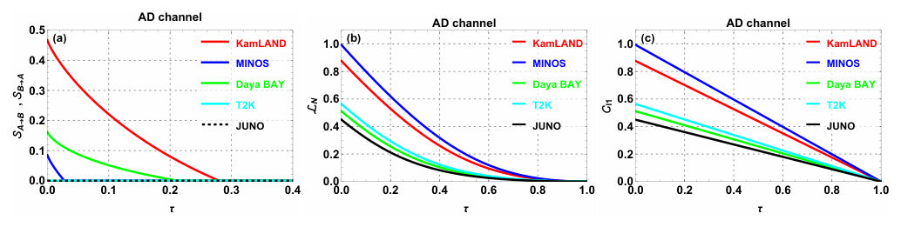
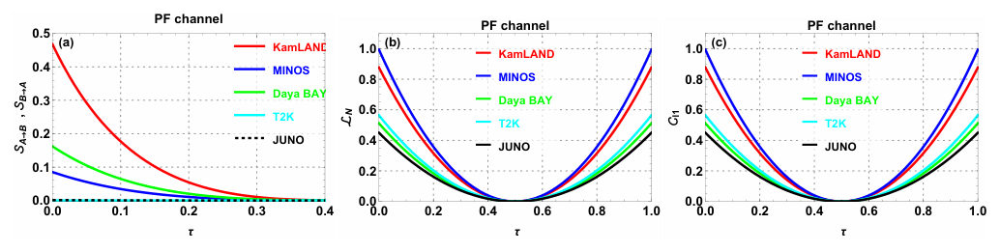
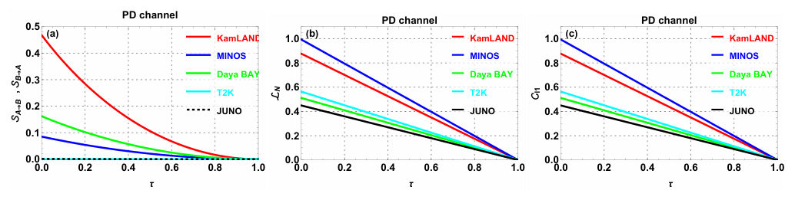
← Index · ← Previous · Next →
Authors: Omar Bachain, Elhabib Jaloum, Mohamed Amazioug, Nazek Alessa, Wedad R. Alharbi, Rachid Ahl Laamara, Abdel-Haleem Abdel-Aty
Type: theory · Category: quantum information and computing · PDF: https://arxiv.org/pdf/2605.05015v1
Analysis basis: full PDF text, analyzed in chunks
Topic relevance: 🔥 entanglement & information structure 4/5 · non-equilibrium dynamics 3/5 · correlated / nonlocal dissipation 2/5 · methods for driven-dissipative 2/5




Summary. This paper explores the degradation of quantum correlations in neutrino oscillations due to environmental decoherence. It identifies a clear hierarchy of robustness among quantum steering, entanglement, and coherence and demonstrates how non-Markovian memory effects can lead to the revival of certain quantum resources.
Why it may be interesting. It provides a detailed study of how different types of environmental noise (dissipative vs. dephasing) and memory effects (non-Markovianity) affect a hierarchy of quantum correlations, which is directly applicable to open quantum systems and quantum information processing.
Main problem. Investigating how environmental decoherence and non-Markovian memory effects impact the dynamical evolution and robustness of quantum resources (steering, entanglement, and coherence) in neutrino oscillation systems.
Main result. The study establishes a hierarchy of robustness where quantum steering is the most fragile, followed by entanglement, while quantum coherence is the most resilient. Non-Markovian effects induce partial revivals of entanglement and coherence through information backflow, though steering remains largely suppressed.
Method. The authors use an open quantum system approach with the Kraus operator formalism to model three noise channels (Amplitude Damping, Phase Flip, and Phase Damping) and compare Markovian and non-Markovian dynamics.
Model / system. A two-flavor neutrino oscillation framework is modeled as an effective bipartite two-qubit system using an occupation number representation and the PMNS mixing matrix.
Key observables. Quantum steering (S_A to B, S_B to A, and steering asymmetry), Logarithmic Negativity (entanglement), and l1-norm of quantum coherence.
Important parameters / regimes. Oscillation phase (phi), decoherence strength (tau), mass-squared difference (delta m^2), mixing angle (theta), and environmental correlation time (chi).
Assumptions / limitations. The study assumes a two-flavor approximation, the ultra-relativistic limit, and that neutrinos are produced with equal momentum.
Figures summary. Figures show the oscillatory dependence of quantum resources on oscillation phase, the monotonic decay of resources under amplitude damping, and the symmetric decay-revival dynamics and linear decay under phase flip and phase damping channels across different experimental setups (KamLAND, Daya Bay, JUNO).
Paper structure. The paper begins by mapping neutrino oscillations to a two-qubit system, then derives analytical expressions for quantum resources under specific noise channels, followed by a comparative analysis of different noise models (AD, PF, PD) and dynamical regimes (Markovian vs. non-Markovian), and concludes with an experimental comparison using data from major neutrino collaborations.
Neutrino oscillations confirm the presence of mode entanglement, as each flavor eigenstate is composed of a coherent superposition of distinct mass eigenstates. In this work, we investigate the dynamics of quantum resources in neutrino oscillation systems by analyzing quantum steering, logarithmic negativity, and quantum coherence within a two-flavor framework. Treating neutrino oscillations as an effective two-level quantum system, we study the influence of environmental decoherence on these nonclassical features by modeling the system as an open quantum system. Three representative noise channels are considered, namely amplitude damping (AD), phase flip (PF), and phase damping (PD), allowing us to capture both dissipative and dephasing mechanisms. We examine the evolution of quantum resources in both Markovian and non-Markovian regimes, highlighting the role of memory effects in the system-environment interaction. The results reveal a clear hierarchy in the robustness of quantum resources under decoherence. Steering is the most sensitive correlation in the hierarchy under decoherence effects. while logarithmic negativity exhibits intermediate robustness. Quantum coherence displays the highest resilience, persisting over a wider range of parameters. In the PF and PD channels, logarithmic negativity and coherence are shown to exhibit identical dynamical behavior, reflecting their common dependence on phase-related noise. In contrast, the non-Markovian regime leads to delayed decoherence and partial revivals of entanglement and coherence due to information backflow, whereas quantum steering remains strongly suppressed. These findings provide a comparison of different quantum resources in neutrino oscillation systems and offer new insights into the interplay between decoherence mechanisms and quantum correlations.
Authors: Zoltán Bajnok, Dávid Fülepi, Máté Lencsés
Type: theory · Category: statistical mechanics · PDF: https://arxiv.org/pdf/2605.04823v1
Analysis basis: full PDF text, analyzed in chunks
Topic relevance: 🔥 non-equilibrium dynamics 4/5 · non-equilibrium universality 3/5 · entanglement & information structure 2/5 · scars & prethermalization 2/5
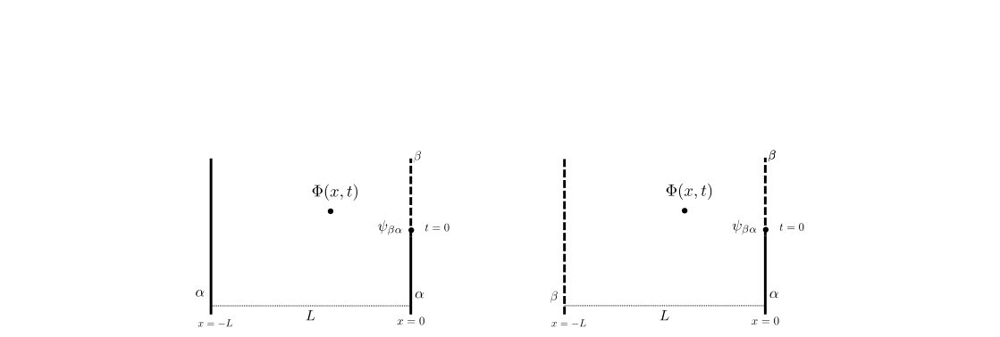
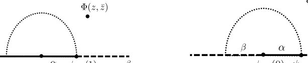
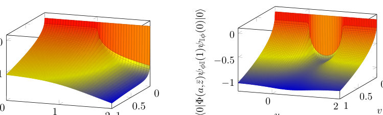
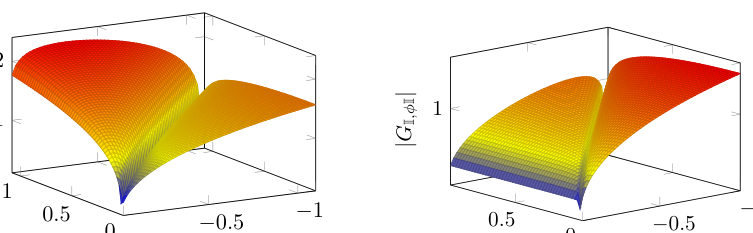
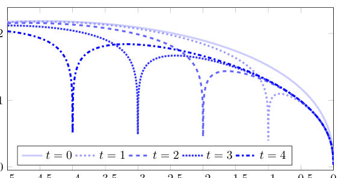
Summary. This paper establishes a mathematical framework to calculate the real-time evolution of bulk operators after an integrable boundary quench. By studying the Lee-Yang model, the authors demonstrate how particle interference leads to specific decay laws and provide a method to reconcile numerical TCSA results with continuum field theory.
Why it may be interesting. It provides deep insights into non-equilibrium dynamics and relaxation in integrable systems, specifically how boundary-induced excitations propagate and interfere, which is highly relevant to many-body dynamics and the study of quench-induced steady states.
Main problem. The paper investigates the real-time dynamics and expectation values of bulk fields following an integrable boundary quantum quench, where one boundary condition is suddenly switched to another.
Main result. The authors develop a general framework using form factor expansions to calculate post-quench vacuum-to-vacuum matrix elements and identify a modified $t^{-1}$ decay law due to destructive interference in the massive theory.
Method. The study employs a double form-factor expansion approach, conformal mapping to the Upper Half Plane, and the Truncated Conformal Space Approach (TCSA) for numerical validation and renormalization.
Model / system. The primary model used is the (1+1)-dimensional Lee-Yang model, covering both its Conformal Field Theory (CFT) point and its massive integrable perturbation on a strip or semi-infinite plane.
Key observables. Expectation values (VEVs) of local bulk fields, correlation functions, and the time evolution of the vacuum amplitude.
Important parameters / regimes. Boundary conditions (identity and primary field), strip width $L$, time $t$, spatial position $x$, and the mass scale $m$.
Assumptions / limitations. The analysis is restricted to integrable boundary conditions and integrable bulk perturbations, and assumes the left boundary condition remains fixed or follows specific simplified scenarios.
Figures summary. Figures illustrate the physical setup and geometry mapping, 3D plots of correlation functions, energy spectra from TCSA, and comparisons between analytical predictions and numerical data including light-cone effects.
Paper structure. The paper progresses from defining the boundary quench protocol and conformal analysis to developing the massive theory framework via form factors, followed by numerical validation using TCSA and error analysis/renormalization.
We investigate an integrable boundary quench, in which one integrable boundary condition is suddenly switched to another. We develop a general framework for analyzing the resulting real-time dynamics based on form factors of bulk and boundary-changing operators. We first study the problem at the conformal point of the Lee-Yang model and then extend the analysis to its massive perturbation, where we examine the time evolution of the pre-quench vacuum and compute the vacuum-to-vacuum matrix elements of local operators inserted after the quench. The analytical results are validated by numerical calculations using the truncated conformal space approach adapted to boundary-changing situations.
Authors: Edoardo Giusto, Gabriele Iurlaro, Bartolomeo Montrucchio, Alberto Scionti, Olivier Terzo, Chiara Vercellino, Giacomo Vitali, Paolo Viviani
Type: both · Category: quantum information and computing · PDF: https://arxiv.org/pdf/2605.04737v1
Analysis basis: full PDF text, analyzed in chunks
Topic relevance: 🔥 QC/QI experiment 4/5 · 🔥 Rydberg arrays 4/5 · analog quantum simulation 3/5
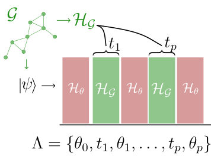
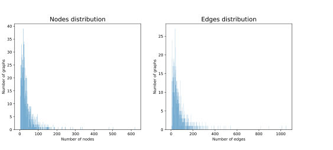
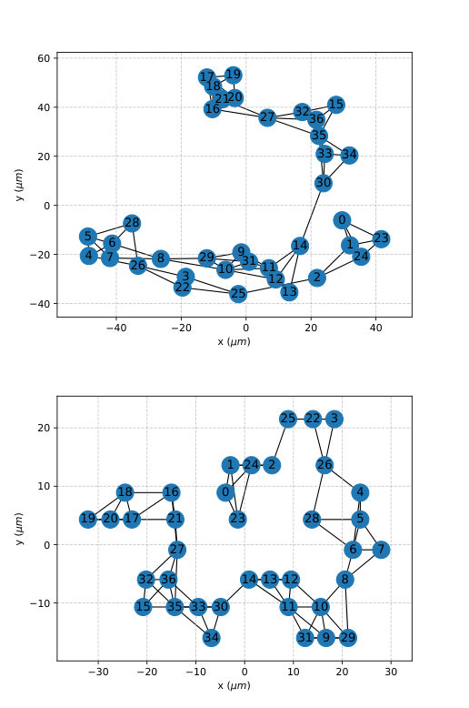
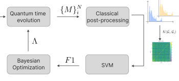
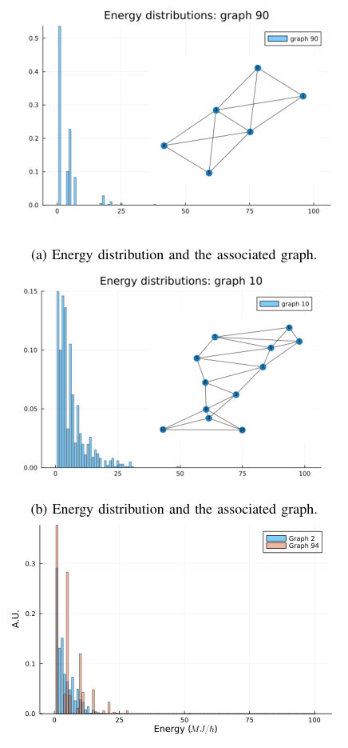
Summary. This paper demonstrates a successful implementation of a quantum machine learning algorithm for graph classification using a 256-qubit neutral atom simulator. By optimizing the quantum pulse sequence via Bayesian optimization, the researchers achieved performance that exceeds classical benchmarks on protein datasets. The work highlights the potential of using programmable Rydberg atom arrays for real-world quantum computing tasks despite current hardware noise.
Why it may be interesting. It demonstrates a practical application of Rydberg-based quantum simulators for complex tasks like graph classification and shows how pulse optimization can mitigate hardware noise in many-body systems.
Main problem. Implementing Quantum Machine Learning (QML) for graph classification on real-world hardware, specifically overcoming the constraints of noise and limited connectivity in neutral atom simulators.
Main result. The optimized Quantum Evolution Kernel (QEK) on the 256-qubit Aquila platform achieved an F1 score of 46.3% on the PROTEINS12 dataset, outperforming both classical Shortest Path Kernels and unoptimized quantum protocols.
Method. A hybrid quantum-classical pipeline using a Quantum Evolution Kernel (QEK) based on Jensen-Shannon divergence, optimized via Bayesian Optimization to find the best pulse sequence parameters.
Model / system. A 256-qubit neutral atom simulator (QuEra Aquila) using Rubidium atoms trapped in optical tweezers, where qubits are defined by Rydberg and ground states and interactions are governed by the Rydberg blockade and an Ising Hamiltonian.
Key observables. Energy distributions derived from atom measurements and the resulting probability distributions used for kernel computation.
Important parameters / regimes. Pulse parameters (Rabi frequency, detuning, and duration), kernel scaling factor (mu), and the number of measurement shots.
Assumptions / limitations. Graphs must be representable as Unit Disk Graphs to fit the physical connectivity of the atom array; the study assumes the effectiveness of the DEN model for graph embedding.
Figures summary. Figure 1 shows the layered time evolution of the Hamiltonian; Figure 2 shows dataset statistics; Figure 3 illustrates graph embedding onto the register; Figure 4 is a flowchart of the hybrid approach; Figure 5 compares energy distributions; Figure 6 shows a kernel matrix heatmap; Figure 7 compares optimized vs. non-optimized waveforms; Figure 8 compares energy distributions under different parameters.
Paper structure. The paper introduces the QML problem for graph classification, details the physical platform and hardware constraints, describes the graph embedding and QEK algorithm, presents the Bayesian optimization of waveforms, and concludes with performance benchmarking against classical methods and noise analysis.
Neutral atom platforms are analogue quantum simulators that offer the possibility to map graphs onto a 2D qubit register using programmable Rubidium atoms arrays, whose valence electrons' energy state is used as qubits, using optical tweezers. This makes it possible to implement algorithms for solving graph combinatorial optimization and Quantum Machine Learning (QML) tasks, such as graph classification. However, the restrictions of real hardware, as well as the very low number of publicly available machines, make such implementation non-trivial. In this work, we manage to compute the Quantum Evolution Kernel (QEK) to extract the features from graphs of the PROTEINS dataset using the 256-qubits Aquila platform (available through AWS) and then we apply classical Machine Learning (ML) techniques for the final classification. The method is benchmarked against classical kernels, resulting in slightly better performance, proving the effectiveness of the method, even in the case of a noisy quantum simulator.
Authors: Zhenyu Xiao, Hao-Kai Zhang, Shuo Liu
Type: theory · Category: statistical mechanics · PDF: https://arxiv.org/pdf/2605.04155v1
Analysis basis: full PDF text, analyzed in chunks
Topic relevance: 🔥 non-equilibrium dynamics 4/5 · entanglement & information structure 3/5 · non-equilibrium universality 2/5 · scars & prethermalization 2/5
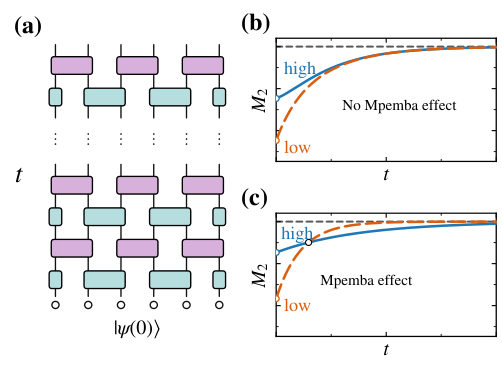
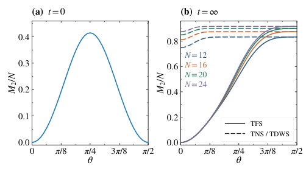
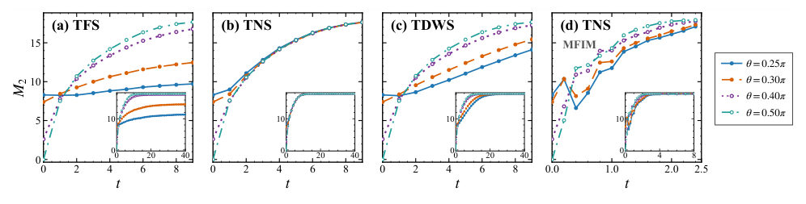
Summary. The paper identifies a quantum Mpemba effect where the generation of nonstabilizerness (magic) follows counterintuitive trajectories, where less magical states can become more magical than their counterparts over time. This phenomenon is driven by the spatial arrangement of initial charges and is a general feature of symmetric and non-integrable quantum dynamics.
Why it may be interesting. It connects the resource theory of magic with non-equilibrium statistical mechanics, showing how symmetry and spatial configuration can lead to anomalous relaxation phenomena in many-body dynamics.
Main problem. Investigating the existence of a quantum Mpemba effect in the dynamical generation of nonstabilizerness (magic), specifically whether states with lower initial magic can overtake states with higher initial magic during evolution.
Main result. The authors discover an inverse Mpemba effect where magic growth trajectories cross, driven by the interplay between charge conservation and the spatial structure of initial states. This effect is shown to be robust across U(1) and SU(2) symmetric random circuits as well as non-integrable Hamiltonian dynamics.
Method. The study uses analytical derivations for late-time steady-state magic and numerical simulations of random circuits and the mixed-field Ising model to track early-time dynamics.
Model / system. The study examines U(1)-symmetric and SU(2)-symmetric brickwork random circuits, as well as the non-integrable mixed-field Ising model, using various tilted product state initial conditions.
Key observables. Second stabilizer Renyi entropy (M2), which quantifies nonstabilizerness or magic.
Important parameters / regimes. Tilt angle (theta), system size (N), time (t), and charge-sector distribution p(q).
Assumptions / limitations. The equivalence of certain state families is treated as an asymptotic property of the steady-state limit where intra-sector scrambling is complete.
Figures summary. Figure 1 illustrates the circuit structure and the concept of the Mpemba crossing; Figure 2 shows the evolution of magic for different initial states; Supplemental figures show dynamics in SU(2) circuits and the Ising model.
Paper structure. The paper introduces the quantum Mpemba effect in magic generation, provides analytical derivations for steady-state magic in U(1) circuits, explores the role of spatial structure via TNS and TDWS states, extends the findings to SU(2) and non-integrable Hamiltonian systems, and concludes with a detailed mathematical appendix.
Quantum state preparation can be strikingly counterintuitive: the fastest route to a target state need not start from the apparently closest initial condition. We uncover such a quantum Mpemba effect in the dynamical generation of quantum magic (nonstabilizerness), quantified by the stabilizer Rényi entropy, in $\mathrm{U(1)}$-symmetric random circuits initialized from tilted product states. States with lower initial magic can generate magic faster than states with higher initial magic. The acceleration is not determined solely by the conserved-charge distribution. Two initial-state families with identical initial magic and identical charge distribution exhibit qualitatively different magic-growth dynamics, depending also on the spatial structure of the initial state within each charge sector. Analogous magic Mpemba effects in $\mathrm{SU(2)}$-symmetric circuits and under nonintegrable Hamiltonian dynamics further show that the phenomenon is tied neither to Abelian symmetry nor to random-circuit dynamics, establishing quantum magic as a distinct arena for Mpemba physics.
Authors: Parameshwar R. Pasnoori
Type: theory · Category: strongly correlated electrons · PDF: https://arxiv.org/pdf/2605.05111v1
Analysis basis: full PDF text, analyzed in chunks
Topic relevance: 🔥 non-equilibrium dynamics 4/5 · non-equilibrium universality 3/5 · Keldysh / 2PI / non-Gaussian methods 2/5 · driven-dissipative phase transition 2/5
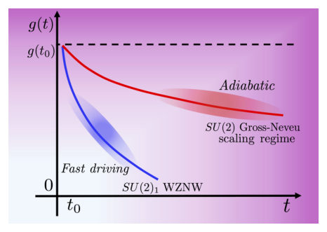
Summary. This paper shows that a time-dependent SU(2) Gross-Neveu model can be solved exactly if its coupling strength evolves according to the Renormalization Group flow. It demonstrates that time evolution in this model mimics the change in energy scale, leading to a dynamically generated, time-dependent mass gap.
Why it may be interesting. It provides a profound theoretical link between the temporal evolution of a driven many-body system and the energy-scale evolution of the Renormalization Group, which is highly relevant for understanding non-equilibrium dynamics in correlated systems.
Main problem. Investigating whether the connection between time-dependent integrability and Renormalization Group (RG) flow manifests at a deeper physical level in the SU(2) Gross-Neveu model.
Main result. The study establishes that the progression of time in the time-dependent model is equivalent to the RG flow in the static model, demonstrating a dynamical dimensional transmutation where a time-dependent mass gap is generated.
Method. The author uses the generalized Bethe ansatz framework, solving quantum Knizhnik-Zamolodchikov (qKZ) equations and evaluating the Yang-Yang action via a saddle-point approximation.
Model / system. The SU(2) Gross-Neveu model, a quantum field theory of interacting fermions with a time-dependent spin-exchange interaction strength g(t).
Key observables. Time-dependent mass gap m(t), instantaneous energy E(t), and the Yang-Yang action.
Important parameters / regimes. Drive rate alpha, characteristic time scale t0, coupling strength g(t), and the UV fixed point (SU(2)1 WZNW model).
Assumptions / limitations. The integrability of the system is maintained by assuming the time-dependent coupling strength follows a specific 'RG protocol' trajectory.
Figures summary. Figure 1 illustrates the RG protocol, comparing the adiabatic regime (mass gap generation) with the fast-driving regime (approach to the UV fixed point).
Paper structure. The paper introduces the time-dependent model, constructs an exact N-particle wavefunction using the generalized Bethe ansatz, reduces the problem to qKZ equations, and analyzes the adiabatic and fast-driving regimes using the Yang-Yang action and saddle-point methods.
In this work we consider the time-dependent $SU(2)$ Gross-Neveu model, which is a quantum field theory of fermions which interact with each other through spin exchange interaction with time-dependent coupling strength $g(t)$. Using the recently formulated generalized Bethe ansatz framework, we show that the system is integrable provided the time-dependent coupling strength is such that its trajectories in time are exactly same as that of the renormalization group (RG) flow equations corresponding to the static model, where time $t$' of the time-dependent model is identified with the logarithm of the cutoff$\ln Λ$' of the static model. In the scaling regime $Λ\rightarrow\infty$, the above relation between time and the logarithm of the cutoff provides a characteristic time scale $t_0$. We analyze the exact time-dependent wavefunction in the case of coupling strength decreasing with time and show that in the adiabatic regime, which corresponds to $t\sim t_0$ for drive rate $α_0=1$, the system exhibits a time-dependent dynamical dimensional transmutation where a time dependent mass gap is generated, which at time $t=t_0+Δt$ is given by $m(Δt)=m_0 e^{-πα_0Δt}$, where $m_0=Λe^{-πα_0 t_0}$. Comparing this with the mass gap of the static model, we identify the adiabatic regime of the time-dependent model with the scaling regime of the static model. In the case of very large time scales $t\gg t_0$ for drive rate $α_0$ or for very fast drive rates $α$ such that $αt \gg α_0t_0$, for any $t
Authors: Yu Yang, Yuyang Tang, Pei Zhang, Fuli Li
Type: theory · Category: quantum information and computing · PDF: https://arxiv.org/pdf/2605.04463v1
Analysis basis: full PDF text, analyzed in chunks
Topic relevance: 🔥 non-equilibrium dynamics 4/5 · 🔥 quantum measurements 4/5 · driven-dissipative phase transition 2/5
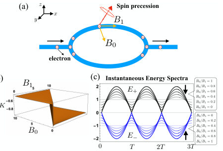
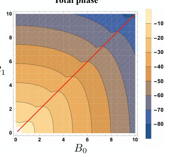
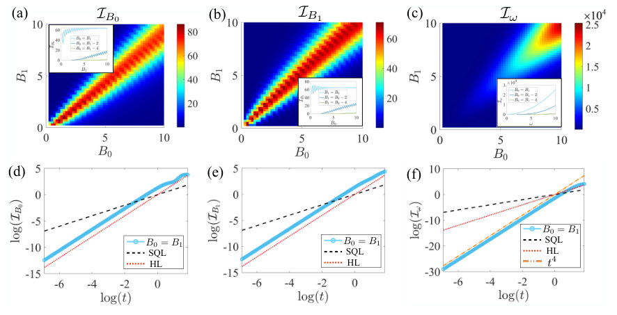
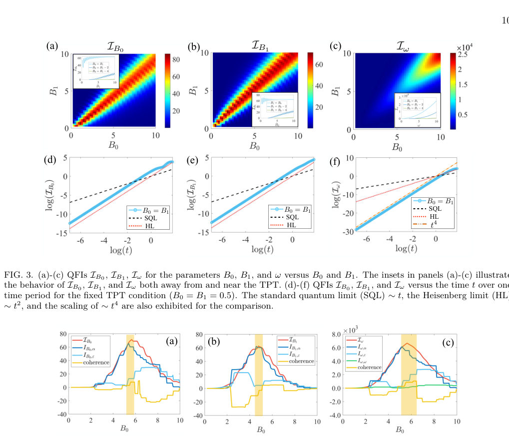
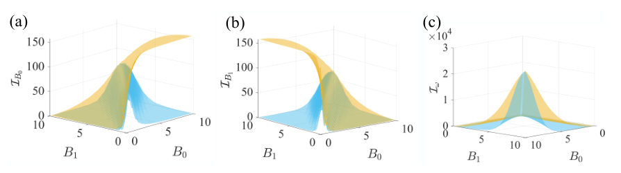
Summary. This paper presents a new strategy for simultaneous multi-parameter estimation in time-periodic quantum systems using Floquet theory. It demonstrates that operating near a topological phase transition significantly enhances sensing precision, even achieving super-Heisenberg scaling for the driving frequency.
Why it may be interesting. It provides a novel framework for quantum sensing in non-equilibrium driven systems, demonstrating how topological phase transitions can be leveraged to surpass standard precision limits in multi-parameter estimation.
Main problem. Developing a quantum multiparameter estimation strategy for general time-periodically driven (Floquet) systems where a static effective Hamiltonian cannot be easily constructed.
Main result. The study reveals that near a periodic-driving-induced topological phase transition, estimation precision for magnetic fields reaches the Heisenberg limit, while the frequency parameter can achieve even higher super-Heisenberg scaling (t^4).
Method. The authors utilize Floquet theory within the Sambe space expansion and exact diagonalization of a truncated Floquet Hamiltonian to decompose the Quantum Fisher Information Matrix into contributions from eigenmodes, quasienergies, and multi-photon processes.
Model / system. A ring-shaped Rashba spin-orbit interferometer (modeled as a 2-level system) subject to a time-periodic Hamiltonian involving Rashba and Zeeman magnetic fields and a driving frequency.
Key observables. Quantum Fisher Information Matrix (QFIM), Classical Fisher Information (CFI), winding number, measurement incompatibility, and transition probabilities.
Important parameters / regimes. Rashba field (B0), Zeeman field (B1), driving frequency (omega), Heisenberg limit (t^2), and super-Heisenberg scaling (t^4).
Assumptions / limitations. The approach assumes the system can be effectively modeled by a truncated Floquet matrix in Sambe space and focuses on the stroboscopic measurement regime.
Figures summary. Schematic of the interferometer, winding number plots, energy spectra near TPT, QFI scaling analysis over time, decomposition of QFI components, and measurement incompatibility plots.
Paper structure. The paper introduces the problem of Floquet multiparameter estimation, develops a mathematical framework using Floquet theory and Sambe space, applies this to a Rashba spin-orbit interferometer undergoing a topological phase transition, analyzes precision scaling and measurement incompatibility, and concludes with experimental feasibility mapping.
Periodically driven systems provide a powerful platform for quantum multiparameter estimation. Constructing a static effective Hamiltonian in a proper rotating frame is commonly employed to assess the attainable precision. However, such an approach becomes nonfeasible for more general time-periodically driven systems. To tackle this dilemma, we develop a quantum multiparameter estimation strategy in the Floquet theory framework. The contributions of Floquet eigenmodes, quasienergies, and multi-photon processes to the quantum Fisher information matrix and measurement incompatibility are determined, respectively. Moreover, this approach is applied to a ring-shaped Rashba spin-orbit interferometer model exhibiting the topological phase transition (TPT). In the vicinity of the TPT boundary, we reveal a pronounced enhancement in the estimation precision of multiple parameters with the Heisenberg limit scaling and even higher. Meanwhile, the measurement incompatibility vanishes in an oscillatory manner, and the stroboscopic projective measurement enables the highest estimation precision achievable. This work provides a complete Floquet picture for time-dependent critical quantum multiparameter estimation.
Authors: Jian-Feng Cai, Jingyang Li, Xiaoqun Zhang, Yuanwei Zhang
Type: theory · Category: numerical methods · PDF: https://arxiv.org/pdf/2605.04533v1
Analysis basis: full PDF text, analyzed in chunks
Topic relevance: 🔥 methods for driven-dissipative 4/5 · analog quantum simulation 2/5 · entanglement & information structure 2/5 · quantum measurements 2/5
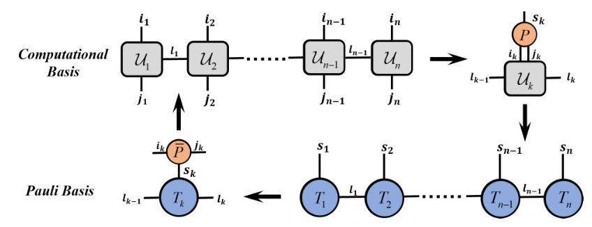
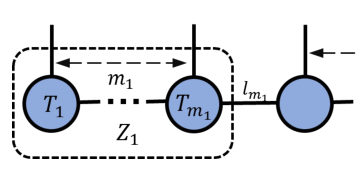
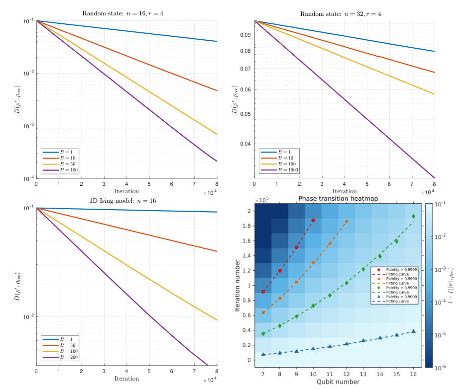
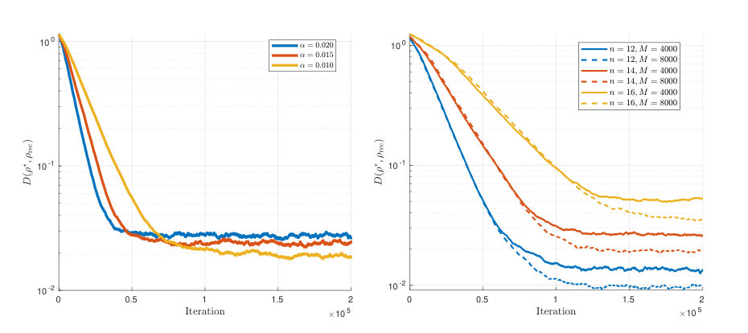
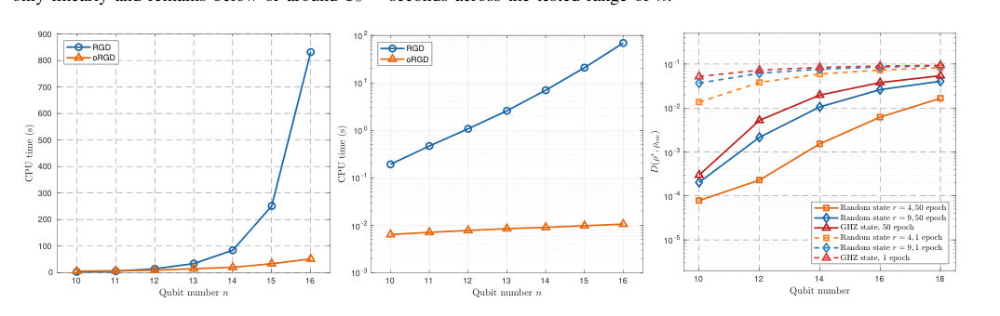
Summary. This paper introduces an efficient online algorithm for reconstructing quantum states that have a Matrix Product Operator structure. By treating tomography as a tensor completion problem, the authors reduce the required measurement complexity from exponential to polynomial scaling. This allows for the scalable characterization of large-scale quantum systems.
Why it may be interesting. It provides a scalable, efficient framework for reconstructing many-body density matrices, which is crucial for characterizing the states produced in experiments involving cold atoms or trapped ions.
Main problem. The challenge of performing efficient Quantum State Tomography (QST) for many-body systems without the exponential scaling of measurements and computation associated with traditional methods.
Main result. The authors develop an online Riemannian Gradient Descent (oRGD) algorithm that achieves linear convergence and requires a number of measurement settings that scales only quadratically with system size.
Method. The problem is reformulated as a low-rank tensor completion task on a real Tensor Train (TT) manifold, using an online gradient descent approach with a tailored spectral initialization.
Model / system. The target is an n-partite d-level quantum system (e.g., qubits) whose density matrix is represented as a Matrix Product Operator (MPO) with a bounded bond dimension.
Key observables. Pauli measurements for qubits and generalized Gell-Mann measurements for qudits.
Important parameters / regimes. System size (n), MPO bond dimension (r), spikiness (nu), incoherence (mu), and measurement noise level (sigma).
Assumptions / limitations. The target state must be representable by an MPO with bounded bond dimension, and the algorithm requires a 'warm start' initialization within a specific error bound.
Figures summary. Figure 1 shows a tensor network diagram of the MPO-Pauli connection; Figure 3 shows convergence of relative error for random and Ising states; Figure 4 shows the impact of step size and measurement shots on error; Figure 5 compares runtime and error between RGD and oRGD.
Paper structure. The paper introduces the MPO-based QST problem, establishes a mathematical equivalence between MPO reconstruction and low-rank tensor completion, proposes the oRGD algorithm and a spectral initialization method, provides theoretical convergence proofs, and validates the approach with numerical experiments on random and Ising model states.
Matrix product operators (MPOs) provide a scalable approach for quantum state tomography (QST) by offering a compact representation of many-body mixed states with limited entanglement, using only a number of parameters that scales polynomially with the system size. In this paper, we study QST for quantum density matrices that can be represented by MPOs. We first derive an equivalent characterization of Hermiticity in terms of the MPO core tensors and show that the coefficient tensor of an MPO under the Pauli or generalized Gell-Mann basis admits a real-valued low tensor-train (TT) rank structure. This establishes an explicit connection between MPO-based QST and noisy low-rank tensor completion. Motivated by this formulation, we develop an online Riemannian gradient descent (oRGD) algorithm that sequentially incorporates measurement data during the reconstruction process. With a proper initialization, we prove that oRGD converges linearly to the target MPO and succeeds with a number of distinct measurement settings that scales quadratically with the system size. As a byproduct, our analysis also yields a significantly improved sample complexity bound for the low TT rank tensor completion task. Furthermore, we propose a tailored spectral initialization method and establish its theoretical guarantee. Numerical experiments on several classes of quantum states validate the effectiveness and scalability of the proposed method.
Authors: Ze-Quan Zhang, Guang-Zheng Ye, Wei-Xin Chen, Yong Li, Huaizhi Wu
Type: theory · Category: quantum information and computing · PDF: https://arxiv.org/pdf/2605.04588v1
Analysis basis: full PDF text, analyzed in chunks
Topic relevance: 🔥 correlated / nonlocal dissipation 4/5 · 🔥 interference shaping light 4/5 · Dicke superradiance 2/5
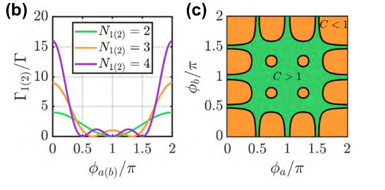
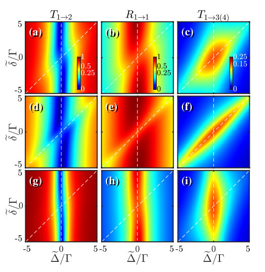
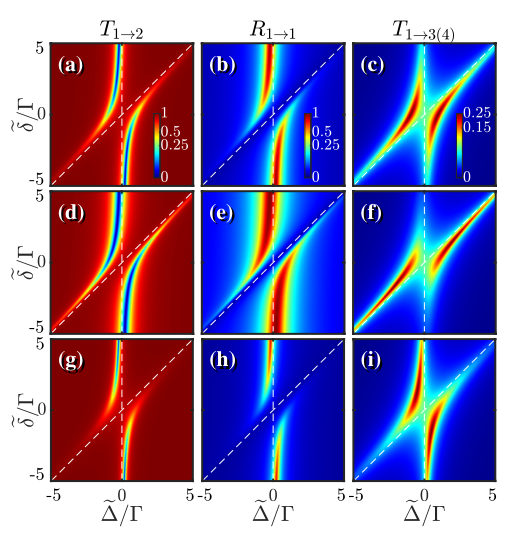
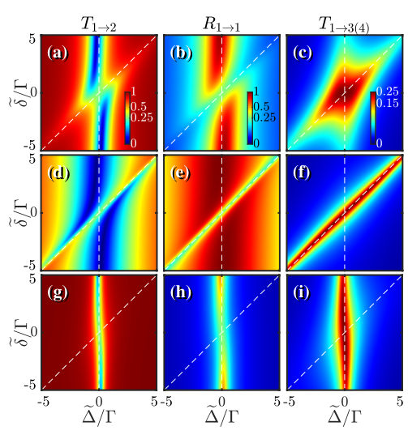
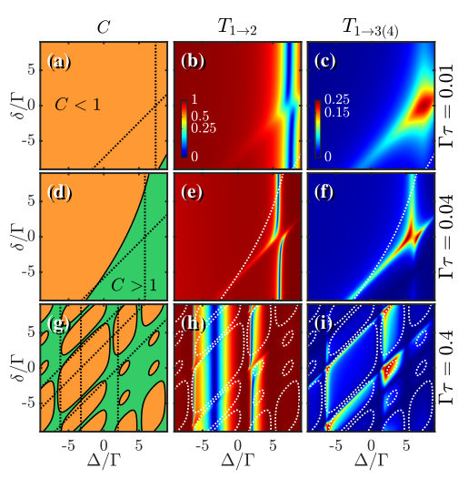
Summary. This paper explores how a molecule of multi-point coupled 'giant atoms' can be used to route single photons between parallel waveguides. It shows that non-Markovian delay effects and asymmetric coupling can be precisely tuned to switch between different quantum coupling regimes and achieve deterministic photon routing.
Why it may be interesting. It provides deep insights into how non-Markovianity and engineered dissipation can be used as tools for controlling quantum networks and light-matter interfaces in waveguide QED.
Main problem. Investigating single-photon scattering and routing in a waveguide-QED setup using a 'giant molecule' to understand how asymmetric coupling and non-Markovian retardation effects can control photon-path interference.
Main result. The study demonstrates that by tailoring decay-rate asymmetry, atomic detuning, and propagation delay, one can achieve deterministic photon routing and transition between weak- and strong-coupling regimes.
Method. A real-space scattering approach within the single-excitation subspace is used, solving the stationary Schrödinger equation with a linear dispersion relation.
Model / system. A 'giant molecule' consisting of two frequency-detuned atoms, each coupled to multiple discrete points in two parallel waveguides, including a model for chiral coupling and interatomic exchange interaction.
Key observables. Transmission and reflection coefficients (probabilities), effective decay rates, Lamb shifts, and scattering amplitudes.
Important parameters / regimes. Cooperativity (C), asymmetry ratio (R), atomic detuning (delta), interatomic coupling (Omega), and propagation delay (Gamma*tau).
Assumptions / limitations. Rotating-wave approximation (RWA), linear dispersion relation, and the use of the single-excitation subspace.
Figures summary. Fig 1 shows the setup and decay rates; Fig 3 displays scattering probabilities in the critical coupling regime for different asymmetry ratios; Fig 4/6 illustrates the transition between coupling regimes induced by non-Markovian delays.
Paper structure. The paper introduces the giant molecule setup, defines the Hamiltonian and scattering framework, analyzes the Markovian regime (asymmetry and tuning), explores the strong-coupling regime, investigates non-Markovian retardation effects, and discusses chiral routing applications.
We investigate single-photon scattering in a waveguide-QED setup, where a giant molecule composed of two frequency-detuned giant atoms is coupled to two parallel waveguides via multiple connection points. The competition between coherent atom--atom coupling and the effective decay rates dictates the splitting of a single resonance into a doublet in the transmission (reflection) spectra. By tailoring the asymmetry of the decay rates and the atomic detuning, one can engineer photon-path interference to optimize the transfer between waveguides; under chiral coupling conditions, this interference can be further harnessed to realize fully deterministic routing. In the non-Markovian regime, retardation effects can reshape the spectra and actively drive transitions between the weak- and strong-coupling regimes, converting an unsplit Markovian resonance into a clearly separated doublet, or conversely merging a split doublet back into a single resonance. For sufficiently long time delays, it further generates multiple resonances and avoided crossings, enriching the spectral response. Our results demonstrate how atomic detuning, decay-rate asymmetry, and non-Markovian retardation cooperate to provide versatile, interference-based control over single-photon routing in multi-port quantum networks.
Authors: Aleksandrs Zacinskis, Frank T. Ebel, Mathias Pelz, Fabian B. Kugler, Karsten Held, Jan von Delft, Maurits W. Haverkort, Andreas Gleis
Type: theory · Category: numerical methods · PDF: https://arxiv.org/pdf/2605.04974v1
Analysis basis: full PDF text, analyzed in chunks
Topic relevance: 🔥 Kondo & dissipative impurity 4/5 · Keldysh / 2PI / non-Gaussian methods 3/5 · methods for driven-dissipative 3/5
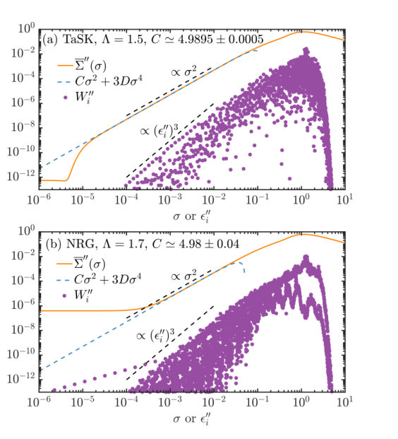
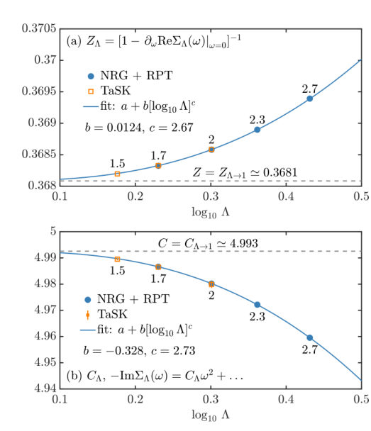
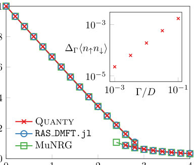
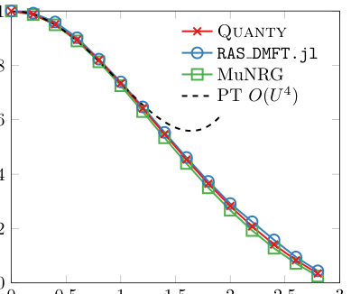
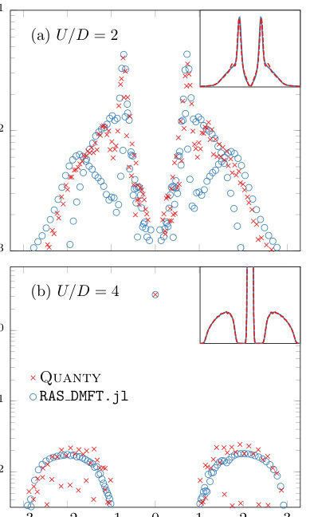
Summary. The paper presents a new numerical method to calculate the self-energy of discrete many-body systems without the instability and causality issues found in standard Dyson equation subtraction. By using a symmetric estimator based on the Schur complement, the method ensures physical spectral weights and improves accuracy in DMFT calculations. It is compatible with various many-body solvers including NRG, DMRG, and Krylov-based methods.
Why it may be interesting. This is highly relevant for many-body dynamics and open quantum systems because it provides a numerically stable way to extract spectral properties and self-energies from discrete representations (like MPS or NRG) without introducing unphysical broadening or violating causality.
Main problem. Calculating the single-particle self-energy in discrete many-body systems is numerically unstable due to the subtraction of nearly canceling quantities in the Dyson equation, often leading to causality violations and unphysical negative spectral weight.
Main result. The authors derive a symmetric estimator for the discrete self-energy that is guaranteed to remain causal at the numerical level and avoids the need for artificial broadening. This method achieves significantly improved accuracy for impurity properties and allows for a consistent discrete DMFT self-consistency loop.
Method. The method uses a discrete realization of Kugler's symmetric improved estimator, treating the self-energy as the Schur complement of an augmented Green's function. It involves a three-step process of inversion, projection, and re-inversion of a matrix-valued propagator.
Model / system. The method is applicable to any discrete many-body Hamiltonian, specifically focusing on quantum impurity models (like the Single-Impurity Anderson Model) and the Hubbard model on a Betra lattice.
Key observables. Single-particle self-energy, Green's functions, hybridization function, quasiparticle weight (Z), scattering-rate coefficient (C), and double occupancy.
Important parameters / regimes. Discretization parameter (Lambda), interaction strength (U/D), temperature (T), and Krylov space size (K).
Assumptions / limitations. The method assumes the system is a discrete many-body system with a finite number of bath poles; the Schur complement formula requires the existence of the involved matrix inverses.
Figures summary. Figure 1 shows the discrete self-energy spectrum; Figure 3 compares double occupation across different codes; Figure 4 shows quasiparticle weight vs interaction strength; Figure 5 displays the self-energy spectrum in metallic and insulating phases; Figure 6 illustrates the effect of regularization on the quasiparticle weight.
Paper structure. The paper introduces the problem of numerical instability in self-energy extraction, derives the symmetric estimator using the Schur complement of an augmented propagator, demonstrates implementation across various solvers (TaSK, NRG, ED), validates the approach using the Anderson impurity model and DMFT, and discusses regularization of spurious poles.
We derive a discrete spectral representation of the single-particle self-energy using a discrete evaluation of Kugler's symmetric improved estimator. Our construction can be used on both the real and the complex (Matsubara) frequency axis. It is guaranteed to remain causal at the numerical level, in contrast to standard approaches that may generate unphysical negative spectral weight or require additional broadening. Our representation can be used for any Hamiltonian; here we apply it to quantum impurity models and in dynamical mean-field theory. The latter is formulated with a discrete hybridization function throughout its self-consistency loop. In both cases and across various numerical methods, we obtain significantly improved accuracy for a range of impurity properties.
Authors: Carla Caro Villanova, Alan C. Santos
Type: theory · Category: quantum information and computing · PDF: https://arxiv.org/pdf/2605.05035v1
Analysis basis: full PDF text, analyzed in chunks
Topic relevance: 🔥 entanglement & information structure 4/5 · non-equilibrium dynamics 3/5 · scars & prethermalization 2/5
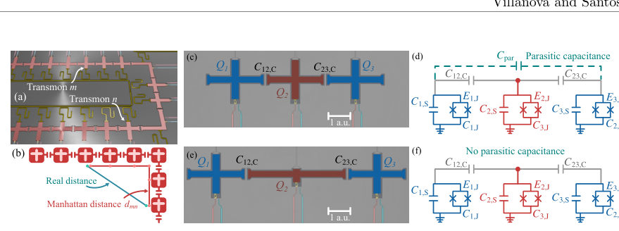
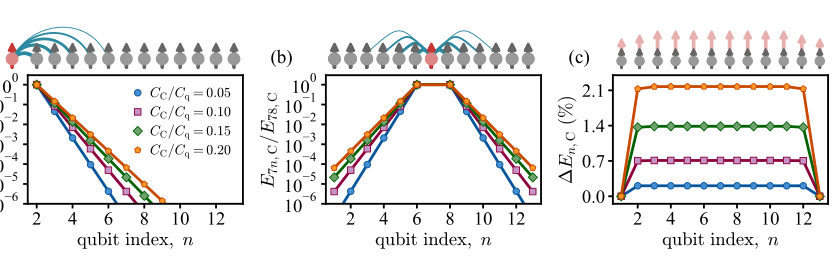
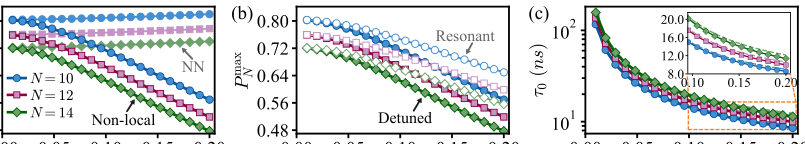
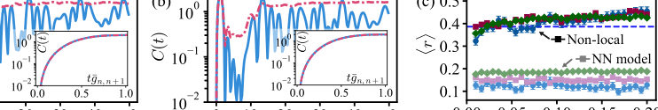
Summary. The study shows that the capacitance network in transmon arrays induces non-local interactions that significantly speed up the scrambling of quantum information. While these interactions degrade single-qubit state transfer, they facilitate faster OTOC saturation and move the system toward partial ergodicity.
Why it may be interesting. It provides insights into how parasitic or network-induced non-localities can be leveraged to accelerate information scrambling and create non-local correlations without entering a fully chaotic regime, which is crucial for scalable superconducting architectures.
Main problem. Investigating how non-local, network-mediated capacitive interactions in superconducting transmon arrays affect quantum information scrambling and spectral statistics.
Main result. Non-local couplings accelerate the saturation of Out-of_Time-Ordered Correlators (OTOCs) and drive the system toward partial ergodicity, though they do not reach full quantum chaos (GOE).
Method. Analytical derivation using Chebyshev polynomials of the second kind to invert the capacitance matrix, combined with exact numerical diagonalization and OTOC calculations.
Model / system. A 1D array of N superconducting transmon qubits with interactions derived from the inverse capacitance matrix, including nearest-neighbor and non-local 'collateral' couplings.
Key observables. Out-of-Time-Ordered Correlators (OTOCs), level-spacing ratio (r-parameter), and single-excitation state transfer efficiency.
Important parameters / regimes. Capacitance ratio (Cc/Cq), Manhattan distance between qubits, and the weak-coupling limit.
Assumptions / limitations. Two-level system (TLS) approximation, Rotating Wave Approximation (RWA), and the transmon approximation (expanding cosine potential to fourth order).
Figures summary. Figures 4a and 4b show OTOC dynamics for 10 and 12 qubit chains, illustrating early-time N.N. dominance and late-time non-local effects; Figure 4c shows the transition of the level-spacing ratio with increasing qubit number.
Paper structure. The paper introduces the problem of non-local capacitive coupling, provides an analytical framework for the capacitance network, analyzes the impact on single-excitation transport, investigates many-body scrambling via OTOCs, and concludes with spectral statistics analysis.
We investigate the dynamical and spectral consequences of capacitance-network-mediated interactions in superconducting transmon arrays beyond effective nearest-neighbor descriptions. While weak coupling regimes are well captured by an effective nearest-neighbor interacting models, we show that increasing capacitive connectivity induces a pronounced departure from this approximation in dynamical observables. Using Out-of-Time-Ordered Correlators (OTOCs), we demonstrate that such network-mediated couplings significantly accelerate operator scrambling, leading to rapid saturation compared to the nearest-neighbor limit. This dynamical crossover is accompanied by a shift in spectral statistics away from Poissonian behavior toward level repulsion, with the ratio parameter remaining intermediate between Poisson and Gaussian Orthogonal Ensemble (GOE) limits. This indicates the emergence of partial ergodicity rather than fully developed quantum chaos. As this behavior arises within experimentally realistic regimes of current superconducting transmon devices, identifying when network-mediated couplings qualitatively alter information dynamics is directly relevant for scalable superconducting architectures.
Authors: Seyed Mohsen Moosavi Khansari
Type: theory · Category: quantum information and computing · PDF: https://arxiv.org/pdf/2605.04429v1
Analysis basis: full PDF text, analyzed in chunks
Topic relevance: 🔥 entanglement & information structure 4/5 · non-equilibrium dynamics 3/5 · analog quantum simulation 2/5
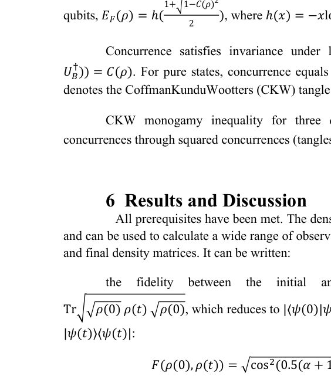
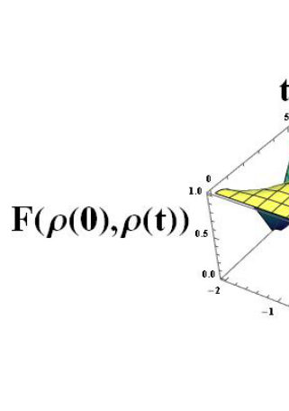
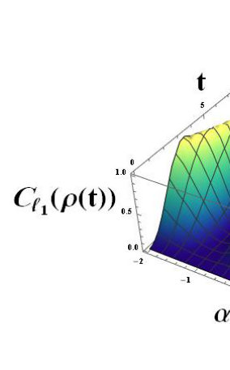
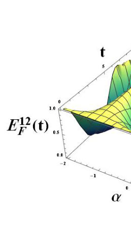
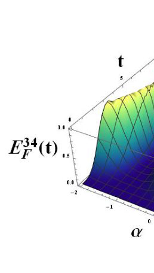
Summary. This paper provides exact analytical solutions for the evolution of quantum resources in a four-qubit Heisenberg chain. It reveals that a tunable coupling parameter can be used to either freeze quantum dynamics or rapidly generate entanglement and coherence. These findings offer a controlled framework for benchmarking small-scale quantum processors.
Why it may be interesting. It provides exact analytical benchmarks for small quantum devices and demonstrates a precise mechanism for controlling and stabilizing quantum resources via tunable coupling.
Main problem. The study investigates the unitary dynamics and resource trade-offs between fidelity, coherence, and entanglement in a small-scale quantum spin chain.
Main result. The authors derive closed-form expressions showing that all quantum resource dynamics are governed by a single phase variable phi = (alpha + 1)t, identifying a 'frozen' regime at alpha = -1 where resources are stabilized.
Method. Analytical derivation using the unitary evolution formalism, partial tracing of the density matrix, and application of entanglement and coherence measures.
Model / system. A four-qubit isotropic Heisenberg XXX spin chain featuring nearest-neighbor and tunable next-nearest-neighbor coupling (alpha), initialized in a Bell-type product state.
Key observables. State fidelity, l1-norm of coherence, and Entanglement of Formation (Ef) for two-qubit subsystems.
Important parameters / regimes. The tunable next-nearest-neighbor coupling alpha, the composite phase phi = (alpha + 1)t, and the frozen regime at alpha = -1.
Assumptions / limitations. The system is closed and finite (four qubits), the dynamics are purely unitary, and the initial state is a specific Bell-type product state.
Figures summary. Surface plots illustrating the periodic, banded structures of fidelity, coherence, and entanglement of formation as functions of alpha and time.
Paper structure. The paper defines the Hamiltonian and initial state, derives analytical expressions for the density matrix and observables, analyzes the resulting periodic dynamics and sensitivity, and discusses future extensions to open systems.
We derive the unitary dynamics of a four-qubit isotropic Heisenberg XXX chain with tunable next-nearest-neighbor coupling $α$, initialized in a Bell-type product state. Closed-form expressions are obtained for the state fidelity $F(ρ(0),ρ(t))$, the $l_1$-norm coherence $C_{l_1}(ρ(t))$, and the entanglement of formation $E_F^{12}(t)$ and $E_F^{34}(t)$ for the two-qubit subsystems (12) and (34). All quantities depend exclusively on the composite phase $φ= (α+1)t$. Fidelity obeys $F = |\cos(φ/2)|$ and remains frozen at $F \equiv 1$ for $α= -1$. Coherence follows $C_{l_1} = \sin^2(φ/2)$, vanishing identically at $α= -1$ and exhibiting sensitivity proportional to $|α+1|$. The entanglement of formation is an entropic function of $φ$, displaying banded oscillations and freezing at $α= -1$. The phase $φ$ unifies all observables, linking the rate of resource variation to $|α+1|$ and identifying maximal sensitivity along $(α+1)t = π/4 + kπ/2$. This framework provides exact benchmarks for few-qubit quantum devices and a controlled pathway for extensions to noise, finite temperature, and larger systems.
Authors: Jan Østergaard, Shashi Raj Pandey, Christophe Biscio, Torben Bach Pedersen, Petar Popovski
Type: theory · Category: quantum information and computing · PDF: https://arxiv.org/pdf/2605.04271v1
Analysis basis: full PDF text, analyzed in chunks
Topic relevance: 🔥 entanglement & information structure 4/5 · Dicke superradiance 2/5 · correlated / nonlocal dissipation 2/5
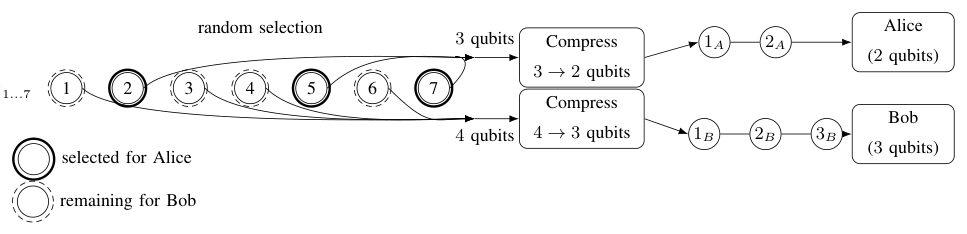
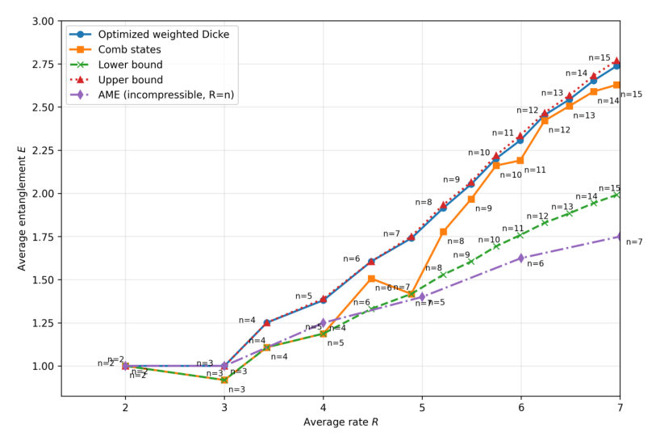
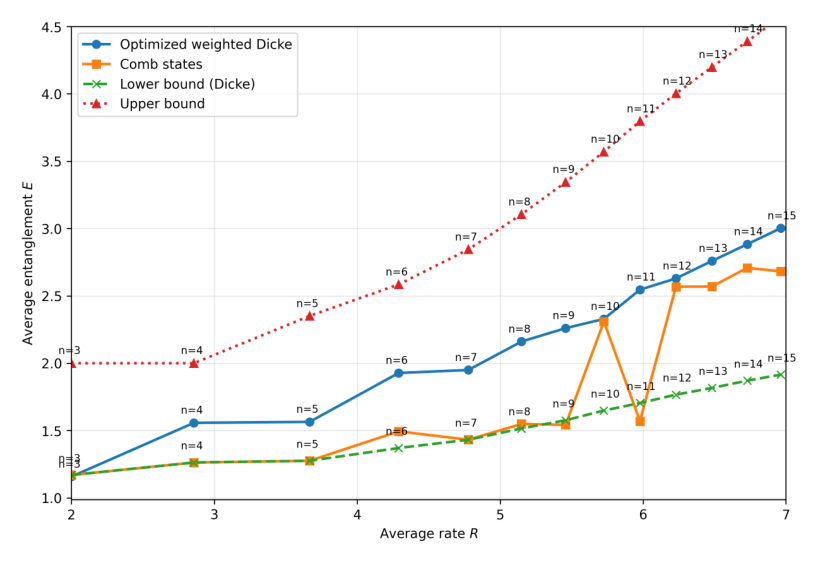
Summary. The paper presents a method to jointly optimize quantum states and compression schemes to maximize entanglement distribution in networks with uncertain topologies. It provides mathematical bounds on entanglement achievable under a fixed transmission budget and demonstrates that compression can be beneficial even in the presence of noisy hardware.
Why it may be interesting. This work is highly relevant for quantum network design and open quantum systems, as it addresses the practical trade-off between reducing channel noise exposure via compression and the error introduction from noisy quantum gates.
Main problem. Optimizing the distribution of multipartite entanglement in quantum networks when the partitioning of qubits among parties is unknown at the time of state preparation.
Main result. The authors derive non-asymptotic upper and lower bounds on achievable average entanglement and identify a crossover point where compression benefits outweigh the noise introduced by compression circuits.
Method. A joint optimization framework using quantum source coding theory, symmetry-based optimization of weighted Dicke states, and local lossless isometric compression maps.
Model / system. A system of n qubits distributed among m parties, where the assignment of qubits to parties is random. The states are restricted to the permutation-invariant (symmetric) subspace, such as Dicke and Comb states.
Key observables. Average entanglement (Geometric Multipartite Entanglement and von Neumann entropy), average coding rate, and Logarithmic Negativity under noise.
Important parameters / regimes. Average coding rate (transmission budget), number of qubits (n), number of parties (m), and channel depolarizing probability (p).
Assumptions / limitations. The compression is lossless for states in the symmetric subspace, and the assignment of qubits to parties is independent of the prepared state.
Figures summary. Figure 1 illustrates the compression of subsystems to reduce communication costs; Figure 2 and 3 show entanglement-rate curves for bipartite and multipartite cases; Figure 4 compares uncompressed, ideal, and noisy compression performance under channel noise.
Paper structure. The paper introduces the problem of entanglement distribution under uncertainty, formulates it as a quantum source coding problem, derives analytical bounds for bipartite and multipartite settings, proposes an efficient optimization method using Dicke states, and evaluates performance under circuit and channel noise.
We study compression strategies for multipartite entanglement distribution under uncertainty in the partitioning of the quantum state. When the partition is not known at the time of state preparation, we show that a joint design of the resource state and a family of compression schemes can increase the entanglement across partitions under a fixed transmission budget. We formulate this as a source coding problem and derive non-asymptotic upper and lower bounds on the achievable average entanglement subject to an average coding rate. We furthermore design an efficient method for jointly optimizing states and lossless compression maps by exploiting the inherent symmetry of weighted Dicke states. In the bipartite case, we propose practical constructions that closely approach the derived upper bound, and more generally we provide practical constructions for multipartite settings.
Authors: Paul Burger, Joey Frey, Johan Kolvik, Mads B. Kristensen, Raphaël van Laer
Type: experiment · Category: quantum information and computing · PDF: https://arxiv.org/pdf/2605.05190v1
Analysis basis: full PDF text, analyzed in chunks
Topic relevance: 🔥 QC/QI experiment 4/5 · 🔥 quantum optics experiment 4/5

Summary. The researchers developed a new type of 'release-free' optomechanical crystal that stays attached to its substrate to improve heat dissipation. By integrating lithium niobate with silicon, they created a device capable of converting microwave signals to optical signals. This is a significant step toward building practical interfaces for connecting quantum computers to optical networks.
Why it may be interesting. This work is highly relevant for quantum optics and quantum networks as it provides a hardware pathway for efficient, thermally-anchored interfaces between microwave-frequency superconducting qubits and optical-frequency communication fibers.
Main problem. Traditional suspended optomechanical crystals suffer from thermal noise due to optical absorption and lack efficient thermal anchoring, which limits their use as transducers between superconducting qubits and optical fibers.
Main result. The authors demonstrated a functional release-free electro-optomechanical transducer that achieves efficient microwave-to-optical transduction with coupling rates compatible with quantum-level operation.
Method. The device was fabricated by integrating thin-film lithium niobate onto a silicon-on-insulator platform via micro-transfer printing and characterized using tunable lasers, vector network analyzers, and high-speed photodetectors.
Model / system. A release-free, chip-scale electro-optomechanical crystal transducer on a silicon-on-insulator (SOI) platform, combining silicon for optomechanics and lithium niobate for piezoelectricity.
Key observables. Optical resonance, mechanical linewidth, optomechanical coupling rate (g_om), electromechanical efficiency, and microwave-to-optical scattering parameter (S_oe).
Important parameters / regimes. Resolved-sideband regime (omega_m > kappa_o), low cooperativity regime (C_om << 1), mechanical frequency of ~4.32 GHz, and total microwave-to-optical efficiency of 1.5e-7.
Assumptions / limitations. The transduction is assumed to be of piezo-optomechanical origin rather than purely electro-optic; simulations assume an isotropic loss factor to account for intrinsic material loss.
Figures summary. Fig 2 shows the mechanical spectrum and phonon number vs microwave power; Fig 4a compares measured and simulated microwave-to-optical scattering parameters; Fig 4b visualizes mechanical mode profiles.
Paper structure. The paper introduces the challenge of thermal noise in suspended crystals, describes the fabrication of the release-free LN-on-SOI platform, details the experimental characterization of optical and mechanical properties, presents the results of microwave-to-optical transduction, and discusses the potential for scaling to qubit-level operation.
Electro-optic modulation is central to classical optical communications and emerging quantum technologies. High-confinement optomechanical crystal modulators enable microwave-optical transduction through strong optomechanical interactions and offer a promising interface between superconducting qubits and optical fibers. However, their performance is limited by thermal noise from optical absorption. Release-free optomechanical crystals provide improved thermal anchoring but have not yet been integrated into a microwave-optical transducer. Here, we demonstrate a release-free electro-optomechanical transducer combining strong optomechanical interactions in silicon with the efficient piezoelectricity of lithium niobate via micro-transfer printing. We observe electro- and optomechanical coupling rates compatible with quantum-level operation when co-integrated with a superconducting microwave circuit. This advance moves release-free electro-optomechanical devices toward practical microwave-optical interfaces.
Authors: Chiara Vercellino, Paolo Viviani, Giacomo Vitali, Alberto Scionti, Andrea Scarabosio, Olivier Terzo, Edoardo Giusto, Bartolomeo Montrucchio
Type: both · Category: quantum information and computing · PDF: https://arxiv.org/pdf/2605.04736v1
Analysis basis: full PDF text, analyzed in chunks
Topic relevance: 🔥 Rydberg arrays 4/5 · analog quantum simulation 3/5
Summary. This paper introduces a neural-network-based method called GEAN to solve the difficult task of embedding optimization problems onto the physical layout of a neutral-atom quantum computer. By learning to transform qubit coordinates to satisfy Rydberg blockade constraints, the method outperforms traditional classical solvers. This enables more efficient mapping of complex combinatorial problems onto programmable quantum hardware.
Why it may be interesting. It presents a novel way to use machine learning to automate the hardware-software mapping process, specifically addressing the geometric constraints inherent in Rydberg-based quantum simulators.
Main problem. The challenge of mapping Quadratic Unconstrained Binary Optimization (QUBO) problems onto the fixed physical connectivity of a neutral-atom quantum processor, specifically satisfying Unit Disk Graph (UDG) constraints.
Main result. The proposed GEAN neural network approach outperforms the Gurobi solver in finding feasible embeddings and can efficiently handle complex 3D 87-qubit configurations in under 2 minutes.
Method. A Graph Embedding Autoencoder Network (GEAN) uses a specialized architecture with distance computation layers to transform initial qubit positions into a feasible configuration that satisfies all hardware and adjacency constraints.
Model / system. The system is an optical quantum simulator based on neutral Rubidium atoms in optical tweezers, utilizing the Rydberg blockade effect to create an Ising-like Hamiltonian where interactions are determined by the blockade radius.
Key observables. Maximum clique size, maximum degree, minimum and maximum inter-qubit distances, and the loss function components representing constraint violations.
Important parameters / regimes. Rydberg blockade radius, minimum separation distance (4 um), maximum pair distance (100 um), and the 2D/3D placement domain radius (50 um).
Assumptions / limitations. The QUBO matrix diagonal elements must be identical and off-diagonal elements must share the same sign due to the nature of the 1/d^6 interaction.
Figures summary. Figure 1 shows the Rydberg blockade mechanism; Figure 2 details the GEAN architecture; Figure 3 illustrates physical limits like hexagonal packing; Figures 4-7 visualize the transformation of 2D and 3D embeddings for various problem instances.
Paper structure. The paper defines the graph embedding problem in the context of Rydberg atoms, introduces the GEAN neural network architecture and its loss function, presents experimental benchmarks against Gurobi, and demonstrates scalability from 2D to 3D embeddings.
Graph embedding is a recurrent problem in quantum computing, for instance, quantum annealers need to solve a minor graph embedding in order to map a given Quadratic Unconstrained Binary Optimization (QUBO) problem onto their internal connectivity pattern. This work presents a novel approach to constrained unit disk graph embedding, which is encountered when trying to solve combinatorial optimization problems in QUBO form, using quantum hardware based on neutral Rydberg atoms. The qubits, physically represented by the atoms, are excited to the Rydberg state through laser pulses. Whenever qubits pairs are closer together than the blockade radius, entanglement can be reached, thus preventing entangled qubits to be simultaneously in the excited state. Hence, the blockade radius determines the adjacency pattern among qubits, corresponding to a unit disk configuration. Although it is straightforward to compute the adjacency pattern given the qubit coordinates, identifying a feasible unit disk arrangement that matches the desired QUBO matrix is, on the other hand, a much harder task. In the context of quantum optimization, this issue translates into the physical placement of the qubits in the 2D/3D register to match the machine's Ising-like Hamiltonian with the QUBO formulation of the optimization problems. The proposed solution exploits the power of neural networks to transform an initial embedding configuration, which does not match the quantum hardware requirements or does not account for the unit disk property, into a feasible embedding properly representing the target optimization problems. Experimental results show that this new approach overcomes in performance Gurobi solver.
Authors: Yue Cai, Hanlin Zhang, Keye Zhang, Jing Qian
Type: theory · Category: other · PDF: https://arxiv.org/pdf/2605.04628v1
Analysis basis: full PDF text, analyzed in chunks
Topic relevance: 🔥 Rydberg arrays 4/5 · methods for driven-dissipative 2/5
Summary. This paper introduces an incremental-update deep reinforcement learning framework to optimize Rydberg-based CNOT gates. By simultaneously modulating pulse amplitudes and phases, the method achieves extremely high fidelities and significantly faster gate operations than traditional methods. The approach is particularly notable for its ability to autonomously discover efficient, non-intuitive control strategies that are robust to experimental noise.
Why it may be interesting. It presents a novel AI-driven approach to control complex, non-adiabatic dynamics in Rydberg systems, offering a way to bypass the performance ceilings of traditional adiabatic protocols in neutral-atom quantum computing.
Main problem. Designing high-fidelity, high-speed Rydberg CNOT gates in neutral-atom arrays while overcoming the fidelity-speed trade-off and the limitations of traditional piecewise adiabatic protocols.
Main result. The proposed IU-DRL framework achieves a peak average gate fidelity of 0.9991 and reduces gate duration by 38.9% compared to conventional methods, while remaining robust against thermal motion.
Method. Incremental-Update Deep Reinforcement Learning (IU-DRL) using a Trust Region Policy Optimization (TRPO) architecture to synchronously modulate pulse amplitudes and phases.
Model / system. A system of two trapped 87Rb atoms modeled as four-level systems interacting via van der Waals forces, including dynamics for spontaneous decay and atomic thermal motion.
Key observables. Average gate fidelity (F_avg), gate duration, and population leakage into Rydberg and intermediate states.
Important parameters / regimes. Rydberg interaction strength V0 = 2pi x 450 MHz, temperature T = 10 uK, and smoothing coefficients xi = 0.1.
Assumptions / limitations. The primary error source in the control atom is assumed to be spontaneous decay during its residency in the Rydberg state.
Figures summary. Figure 1 shows the DRL cycle and optimized pulse profiles; Figure 3 illustrates the learning of the early-cutoff strategy; Figure 4 compares the proposed method against suboptimal traditional update methods; Figure 6 shows population dynamics and pulse sequences for different smoothing regimes.
Paper structure. The paper introduces the problem of Rydberg gate optimization, describes the IU-DRL framework and its incremental update mechanism, presents results on fidelity and speedup, demonstrates robustness against thermal noise, and compares the performance against traditional adiabatic and non-adiabatic benchmarks.
Deep reinforcement learning (DRL), acting as a novel and powerful paradigm for quantum optimal control, offers transformative opportunities for advancing neutral-atom quantum computing. In this work, we theoretically demonstrate a DRL-based framework for realizing Rydberg controlled-NOT gates that achieve both high speed and high fidelity through the synchronous modulation of multiple pulse parameters without any prior heuristic ansatz. By introducing an incremental-update learning policy, our framework effectively regularizes the exploration of the control landscape, ensuring the generation of smooth, experimentally feasible pulse profiles while significantly reducing computational overhead compared to conventional schemes. Crucially, the framework autonomously discovers an early-cutoff policy by optimally reconciling operation speed with high-precision coherent control. Our optimized protocol achieves a peak average fidelity of 0.9991, significantly outperforming conventional methods and surpassing the critical fault-tolerant threshold. This work establishes a generalizable, AI-driven pathway for designing high-performance quantum gates and provides a robust paradigm for autonomous control field optimization across diverse qubit platforms.
Authors: Jacob Paul Simpson, Efstratios Palias, Sharu Theresa Jose
Type: theory · Category: quantum information and computing · PDF: https://arxiv.org/pdf/2605.04915v1
Analysis basis: full PDF text, analyzed in chunks
Topic relevance: 🔥 quantum measurements 4/5 · entanglement & information structure 2/5
Summary. This paper solves the problem of finding the best possible error rates for sequential quantum testing when the alternative hypothesis is a set of states rather than a single state. It introduces an adaptive measurement strategy that achieves the optimal trade-off between error types. The results show that the complexity of this task is fundamentally linked to the measured relative entropy between the states.
Why it may be interesting. This work provides fundamental limits on the efficiency of adaptive quantum measurements, which is critical for quantum sensing and state estimation tasks in quantum optics and open quantum systems.
Main problem. Characterizing the optimal error exponent region for composite sequential quantum hypothesis testing (SQHT) under an expected sample size constraint.
Main result. The authors establish that the achievable error exponent region is bounded by the minimal measured relative entropies between the null state and the alternative set, and prove that this strategy is optimal.
Method. The study proposes a mixture-sequential quantum probability ratio test (mixture-SQPRT) that uses adaptive measurements based on a mixture estimate of the alternative set and employs martingale theory and information-theoretic inequalities.
Model / system. The model involves sequential testing between a known null quantum state (rho) and a compact, convex set of alternative quantum states (D) in a finite-dimensional Hilbert space.
Key observables. Type-I and Type-II error probabilities, measured relative entropy, and the mixture log-likelihood ratio.
Important parameters / regimes. Expected sample size (n), error exponents (R0, R1), and the dimension of the Hilbert space (d).
Assumptions / limitations. The quantum states are assumed to be full rank (or uniformly full rank) and the set of alternative hypotheses is compact and convex.
Figures summary. Figure 1 illustrates the testing framework; Figure 2 shows a geometric representation of the space of density matrices in a 2D eigenvalue plane; Figure 3 depicts the geometric mapping between Euclidean and trace-norm balls.
Paper structure. The paper introduces the SQHT problem, proposes an adaptive mixture-SQPRT strategy, establishes the error exponent region via achievability and converse proofs, and provides mathematical lemmas regarding the martingale properties and continuity of the divergence measures.
We study the composite sequential quantum hypothesis testing (SQHT) problem, where the objective is to distinguish a null quantum state from a compact, convex set of alternative quantum states. We propose a mixture-sequential quantum probability ratio test that adaptively selects measurements based on the current mixture estimate of the alternative set, and stops upon the first threshold crossing of the mixture log-likelihood ratio. Under an expected sample size constraint, we show that our proposed adaptive strategy simultaneously achieves the optimal Type-I and (worst-case) Type-II error exponents. These exponents are characterized by the minimal measured relative entropies between the null state and the alternative set. We further establish a matching converse, thereby characterizing the optimal error exponent region. Finally, our results show that achieving vanishing error probabilities in composite SQHT requires an expected sample complexity at least as large as that of sequential testing between two fixed quantum states.
Authors: Xiaohan Yang, Xuandong Sun, Zhiyi Wu, Jiawei Zhang, Ji Jiang, Xiayu Linpeng, Yuxuan Zhou, Ji Chu, Jingjing Niu, Youpeng Zhong, Song Liu, Dapeng Yu
Type: experiment · Category: quantum information and computing · PDF: https://arxiv.org/pdf/2605.04892v1
Analysis basis: full PDF text, analyzed in chunks
Topic relevance: 🔥 QC/QI experiment 4/5 · quantum measurements 2/5
Summary. This paper presents a hardware-integrated architecture using an FPGA-based neural network to perform real-time surface-code error correction. By achieving sub-microsecond closed-loop latency, the system enables active mid-circuit feedback necessary for non-Clifford operations. This provides a scalable pathway toward the low-latency control required for large-scale fault-tolerant quantum computing.
Why it may be interesting. not directly relevant
Main problem. The need for real-time, low-latency quantum error correction (QEC) to prevent error accumulation and enable mid-circuit feedback for non-Clifford gates in fault-tolerant quantum computing.
Main result. Demonstrated a hardware-integrated FPGA-based neural-network decoder that achieves a 550 ns closed-loop latency, providing real-time surface-code QEC with performance comparable to offline decoding.
Method. An LSTM-based neural network decoder is implemented on an AMD Kintex-7 FPGA using 6-bit integer quantization and a pipelined architecture to process syndrome data in real-time.
Model / system. A 17-qubit subset of a 66-qubit superconducting quantum processor implementing a distance-3 rotated surface code.
Key observables. Logical error rates, logical state fidelity, oscillation amplitude of the expectation value
Important parameters / regimes. Closed-loop latency of 550 ns, QEC cycle time of 1.25 us, decoding latency of 124 ns, and 6-bit quantization for the NN weights.
Assumptions / limitations. The scalability of the decoder is limited by FPGA resource consumption (DSP slices) as the code distance increases; the decoder accuracy assumes the effectiveness of 6-bit quantization and piecewise linear activation approximations.
Figures summary. Figure 1 shows the experimental setup and QEC workflow; Figure 2 details the FPGA-integrated LSTM architecture and compares logical fidelity of the NN decoder against offline MWPM; Figure 3 demonstrates mid-circuit feedback effectiveness in non-Clifford circuits.
Paper structure. Introduction to QEC challenges, description of the hardware-integrated architecture (FPGA/NN decoder), experimental implementation on a superconducting processor, performance evaluation (latency and error rates), demonstration of non-Clifford gate feedback, and discussion on scalability and hardware limitations.
Quantum error correction (QEC) is essential for achieving low error rates required for fault-tolerant quantum computation. In stabilizer-based codes such as the surface code, errors are inferred from repeated syndrome measurements and corrected by a classical decoder. To prevent error accumulation, decoding must be performed with both high throughput and low latency to keep pace with the QEC cycle and enable real-time feedback for universal logical operations. Here we report a hardware-integrated control architecture featuring an FPGA-based neural-network (NN) decoder and experimentally demonstrate real-time surface-code (distance-3) QEC on a superconducting quantum processor. The system achieves a deterministic closed-loop latency of 550 ns, including 124 ns for NN decoding, enabling feedback corrections within a 1.25 us QEC cycle. We show that real-time decoding and feedback correction achieve logical performance comparable to offline decoding while maintaining robustness against varying error conditions. We further demonstrate mid-circuit feedback correction in non-Clifford logical circuits, where Pauli-frame updating alone becomes insufficient. Our results establish a low-latency hardware architecture for embedded QEC control and provide a pathway towards scalable fault-tolerant quantum computing systems.
Authors: Sebastian Grieninger
Type: theory · Category: quantum information and computing · PDF: https://arxiv.org/pdf/2605.04210v1
Analysis basis: full PDF text, analyzed in chunks
Topic relevance: 🔥 entanglement & information structure 4/5 · non-equilibrium dynamics 2/5
Summary. This paper demonstrates that the creation of quark-antiquark pairs in strong gauge fields generates 'nonlocal magic,' a type of quantum correlation beyond simple entanglement. Using holographic duality, the author shows that this effect is a consequence of the non-flatness of the entanglement spectrum in dimensions greater than two. The study provides a geometric link between gravitational backreaction and the emergence of quantum resources.
Why it may be interesting. It connects high-energy holographic dynamics to quantum resource theory, specifically showing how particle production can generate non-classical resources like non-stabilizerness (magic) that are central to quantum computing.
Main problem. Investigating whether the production of a Schwinger pair in a strong non-Abelian electric field generates nonlocal magic, defined as non-stabilizerness that cannot be removed by local unitaries.
Main result. The study finds that for spacetime dimensions d > 2, the entanglement spectrum is non-flat, implying the dynamical generation of nonlocal magic during the pair creation process.
Method. The author uses holographic duality (AdS/CFT) and the Casini-Huerta-Myers (CHM) map to relate entanglement properties to a thermal state on a hyperbolic plane, computing Rényi entropies via the Nambu-Goto action of a probe string.
Model / system. A holographic Schwinger pair (heavy quark-antiquark) modeled as a probe string/brane in a (d+1)-dimensional AdS background, subject to strong non-Abelian (chromo)electric fields.
Key observables. Entanglement entropy (S_EE), refined Rényi entropy, capacity of entanglement (C_E), and nonlocal magic (M_NL).
Important parameters / regimes. Spacetime dimension (d), 't Hooft coupling (lambda), electric field strength (E), and the large-Nc, large-lambda limit.
Assumptions / limitations. The calculation assumes the probe-brane/string approximation, the large-Nc and large-lambda limit, and focuses on spherical entangling surfaces.
Paper structure. The paper introduces the problem of nonlocal magic in pair production, establishes the holographic framework using the CHM map, develops the information-theoretic diagnostics (capacity of entanglement), proves the equivalence of computing C_E via replica construction versus gravitational backreaction, and concludes with the dimensional dependence of the results.
We analyze the emergence of nonlocal magic in Schwinger pair creation in strong non-Abelian (chromo)electric fields using holography. The produced quark--antiquark pair is entangled into a color singlet, yet accelerates into causally disconnected Rindler wedges. Using the Casini--Huerta--Myers conformal mapping and the probe-brane framework, we compute the refined Rényi entropy and its derivative, which captures the antiflatness of the entanglement spectrum for a spherical bipartition. We find that for boundary spacetime dimension $d>2$, the entanglement spectrum is non-flat, implying the dynamical generation of nonlocal magic in the pair creation process. Interestingly, the nonlocal magic in the holographic dual can be obtained from the free energy of the probe action.
Authors: Zakaria Dahbi, Amelle Zair
Type: theory · Category: quantum information and computing · PDF: https://arxiv.org/pdf/2605.05167v1
Analysis basis: full PDF text, analyzed in chunks
Topic relevance: 🔥 entanglement & information structure 4/5
Summary. The paper introduces an algebraic method to construct and verify highly entangled (AME) states by mapping entanglement properties to the rank of matrices over finite fields. By using the Chinese Remainder Theorem, the authors reduce the complexity of verifying large-scale systems from exponential to polynomial time. This allows for the explicit construction of massive entangled states that were previously computationally inaccessible.
Why it may be interesting. This work provides a powerful algebraic framework for generating highly entangled states, which are essential resources for quantum error correction and quantum communication protocols.
Main problem. The difficulty of finding a systematic approach for constructing Absolutely Maximally Entangled (AME) states and the exponential complexity involved in verifying their entanglement properties.
Main result. The authors establish a Rank-Purity Duality that links the Rényi-2 purity of subsystems to the rank of submatrices in a phase matrix, enabling the efficient construction and certification of large-scale AME states like AME(17, 10001).
Method. The study uses finite-field algebraic tools, including the Chinese Remainder Theorem for decomposing composite dimensions and a parallel tempering optimization algorithm to minimize rank deficits.
Model / system. A class of multipartite quadratic-phase quantum states (including stabilizer states) defined by symmetric matrices over finite fields or rings.
Key observables. Rényi-2 purity, Rényi-2 entropy, and submatrix rank.
Important parameters / regimes. Number of parties (N), local dimension (d), and the rank of the phase matrix submatrices.
Assumptions / limitations. The results primarily focus on the class of quadratic-phase quantum states and assume square-free dimensions for the CRT decomposition.
Figures summary. Figure 1 illustrates the CRT structure for square-free dimensions, showing how N-party states are represented across prime-sector states.
Paper structure. The paper introduces the problem of AME construction, defines the quadratic-phase model, proves the Rank-Purity Duality and CRT decomposition, presents a numerical search algorithm, and demonstrates the successful construction and certification of a large-scale AME state.
Absolutely Maximally Entangled (AME) states are important resources in quantum information processing; however, a general systematic approach for constructing these states remains a formidable challenge. We identify a finite-field rank structure underlying multipartite entanglement in a class of quadratic-phase quantum states defined by symmetric matrices over $\mathbb{F}_p$. We prove an exact Rank-Purity Duality: the Rényi-2 purity of any subsystem is determined solely by the rank of the phase matrix. Within this ansatz, the existence of an AME state is equivalent to the existence of a generating phase matrix $P$ whose bipartition submatrices are of full rank, reducing the condition for maximal entanglement to a rank constraint on $P$. This establishes a direct correspondence between entanglement and cut-rank geometry in finite-field matrices. Furthermore, for square-free local dimensions, we show that the entanglement structure factorises via the Chinese Remainder Theorem into independent prime-field contributions, yielding an exact additive decomposition of Rényi-2 entropies. These results provide an algebraic characterisation of entanglement in the quadratic phase formalism and enable the systematic construction of highly entangled states.
Authors: Mariam Ughrelidze, Vincent P. Flynn, Emilio Cobanera, Lorenza Viola
Type: theory · Category: statistical mechanics · PDF: https://arxiv.org/pdf/2605.04153v1
Analysis basis: full PDF text, analyzed in chunks
Topic relevance: driven-dissipative phase transition 3/5 · entanglement & information structure 3/5 · non-equilibrium universality 3/5 · analog quantum simulation 2/5 · methods for driven-dissipative 2/5 · non-equilibrium dynamics 2/5 · spintronics-quantum-optics interface 2/5
Summary. This paper generalizes the concept of quantum criticality to systems that are dynamically stable but lack a traditional ground state. By introducing the Krein gap as the fundamental energy scale, the authors show that critical behavior, such as long-range correlations and entanglement scaling, can be rigorously defined for a much broader class of bosonic models.
Why it may be interesting. It provides a unified framework for studying phase transitions in non-equilibrium or thermodynamically unstable systems, which is highly relevant for researchers in quantum optics, photonics, and many-body dynamics where energy spectra are not bounded from below.
Main problem. Extending the theory of quantum criticality to quadratic bosonic Hamiltonians (QBHs) that are dynamically stable but lack thermodynamic stability (i.e., no ground state).
Main result. The authors establish that criticality is well-defined for all dynamically stable QBHs via the closing of the 'Krein gap,' and that this gap serves as the relevant many-body gap for characterizing phase transitions, exceptional points, and long-range correlations.
Method. The study employs a generalized criticality framework using Bogoliubov transformations, pseudo-Hermitian matrix analysis, covariance-matrix formalism, and information geometry (quantum metric tensor and fidelity).
Model / system. Translationally invariant, finite-range quadratic bosonic Hamiltonians (QBHs) on a D-dimensional lattice, which include physically relevant platforms like photonics, cavity-QED, and magnonics.
Key observables. Krein gap, entanglement entropy, two-point correlation functions, Quantum Metric Tensor (QMT), and quantum fidelity.
Important parameters / regimes. Dynamical stability vs. thermodynamic stability, Exceptional Points (EP), Krein Collisions (KC), and the Krein gap.
Assumptions / limitations. The analysis focuses on translationally invariant systems and the specific class of quadratic bosonic Hamiltonians; it does not fully account for finite-size effects or open boundary conditions.
Figures summary. Figure 1 illustrates a landscape of QBHs, distinguishing between thermodynamic and dynamical stability and showing how the quasiparticle vacuum remains relevant across different stability regimes.
Paper structure. The paper introduces the problem of stability, defines the quasiparticle vacuum (QPV) and the Krein gap, analyzes the nature of spectral singularities (EPs and KCs), proves the uniqueness of the QPV, and demonstrates the scaling of entanglement and correlations near critical points.
For a many-body system in equilibrium, described by a thermodynamically stable Hamiltonian, quantum criticality is associated with structural changes of the many-body ground state. However, there exist physically relevant models, notably, certain quadratic bosonic Hamiltonians (QBHs), which fail to have a ground state. QBHs can be dynamically stable or unstable. We show the notion of criticality is meaningful for the entire class of QBHs that are dynamically stable or at the boundary of instability, regardless of thermodynamic stability, and that the key state for such QBHs is a naturally and unambiguously defined quasiparticle vacuum (QPV). This state is Gaussian, and coincides with the ground state if the QBH is thermodynamically stable. We identify a relevant spectral gap, the Krein gap, associated to the minimal spectral separation between creation and annihilation operators, and show that the QPV is unique when the Krein gap is positive. We prove that, for dynamically stable QBHs with finite-range couplings, correlations are exponentially bounded unless the Krein gap closes, which is associated with one of two spectral degeneracies: an exceptional point or a Krein collision. Consequently, long-range QPV correlations can ensue. Thus, the Krein gap takes the role of the spectral gap for dynamically stable QBHs, and the boundary of dynamical stability and criticality (associated to exceptional points) or multicriticality (associated to Krein collisions) are the same. We also find that bosonic critical behavior beyond thermodynamic stability is witnessed by the scaling of the entanglement entropy and other indicators of equilibrium criticality from information geometry. Our framework opens the door to investigating all dynamically stable QBHs through the lens of critical phenomena, including thermodynamically unstable ones from photonics, cavity-QED, and magnonics.
← Index · ← Previous · Next →